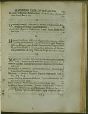
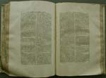
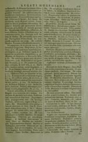
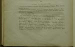
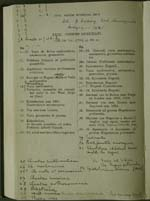

Christiaan Huygens. Facetten van een genie
De manuscripten
8 april 31 mei 2004
Tentoonstelling in de Universiteitsbibliotheek Leiden
7. Huygens in de Leidse bibliotheekcatalogi (1674-1932)
De groei van de Huygenscollectie in de
Universiteitsbibliotheek Leiden is aan de hand van vier gedrukte
bibliotheekcatalogi enigszins te volgen. Niet zonder moeite, want met
name de losse papieren en brieven zijn in de loop der tijd herhaaldelijk
vernummerd en herordend. De oudste bibliotheekcatalogus die publicaties
van Huygens bevat, stamt uit 1674. De catalogus van 1716 wijdt aan het
legaat een apart hoofdstuk. Belangrijke aanwinsten uit 1809 en 1823
(afkomstig uit de familie) worden in de catalogus van 1852 slechts ten
dele beschreven. De inventaris uit 1932 bevat de jongste aanwinsten.
Binnenkort wordt een gedetailleerde catalogus van de Huygenspapieren
gepubliceerd door dr. J. Yoder (Washington).
|  | 7.1. F. Spanheim, Catalogus Bibliothecae
Publicae Lugduno-Batavae noviter recognitus accessit
incomparabilis thesaurus librorum orientalium, praecipue mss.
Lugduni Batavorum 1674. [1016 D 40] — Deze bibliotheekcatalogus bevat de eerste publicaties van Huygens. De twee drukjes hebben één signatuur (Math. in Qu. 39) en zullen derhalve in één band samengebonden zijn. |
|  | 7.2. W. Senguerdius, Catalogus
librorum tam impressorum quam manuscriptorum Bibliothecae
Publicae Universitatis Lugduno-Batavae. Lugduni apud Batavos
1716. [BA1 C 13] –– De ‘Manuscripta praecipue Latina ab Illustrissimo Christiano Hugeni, Zelemi Toparcha, Academiae legata’ beslaan zeven pagina’s (351-357). De catalogus ligt open op de beschrijvingen van HUG 3-18. Elders, in de afdeling ‘Mathematici’, vinden we nog zes publicaties van Huygens. |
|  | |
|  | 7.3. J. Geel, Catalogus librorum manuscriptorum
qui inde ab 1741 Bibliothecae Lugduno Batavae accesserunt.
Lugduni Batavorum 1852. [DOUSA 91] –– Geel beschrijft van de schenking door het Koninklijk Huis (1823) alleen de correspondentie (samen met de correspondentie uit Christiaans legaat). De stukken gelegateerd door A.J. Royer (1809) ontbreken in de catalogus. |
|  | 7.4. Catalogus Compendiarius continens codices
omnes manuscriptos qui in Bibliotheca Academiae Luguno-Batavae
asservantur. Pars I(Lugduni Batavorum 1932). [DOUSA 91] –– Beknopt overzicht van de Huygenspapieren. De nummers 41-48 zijn verworven in de periode 1869-1906. Ter illustratie van de verwarring: HUG 45 is later weer gebruikt als verzamelnummer voor alle brieven van en aan Christiaan. De aanwinsten na 1932 zijn in dit exemplaar met de hand bijgeschreven (49-52); HUG 51 bestaat geheel uit aantekeningen van de editeurs van de Oeuvres complètes (zie vitrine 9). |
| vorige pagina | volgende pagina |